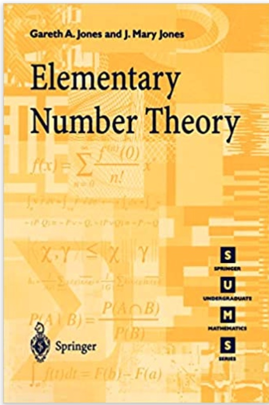

attendees
- Danie Kane
- Xinle Yu
- Tongyun Zhang
- Haochen Wang
agenda
- Review of last meeting: practice problems
- New topics to be taught
- Practice problems on the new topics
- concepts review & problem-solving skills
From last meeting
Last time we discussed the questions in past exam paper about number theory and probability.
This meeting will cover the following topics:
Questions from last time
- Commutativity of union and intersection operation The order of the sets are commutative. However, the order of the operations are not
- What percentage does number theory account in the Putnam test ccording to 2015-2021 past tests, it accounts for about 12%
- What textbook to use for number theory
-
show the book
 Elementary Number Theory, Jones & Jones